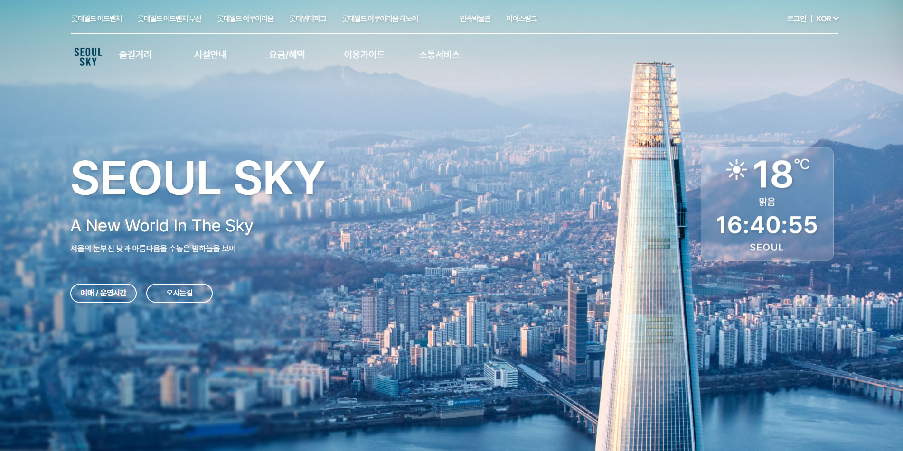
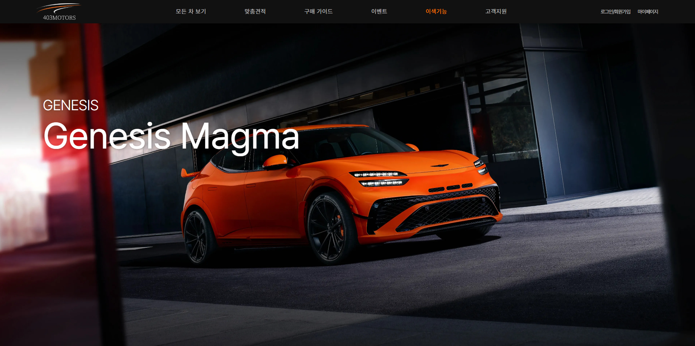
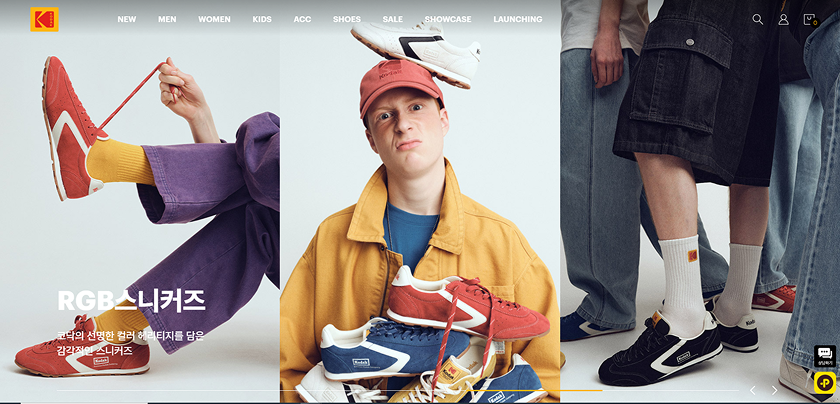
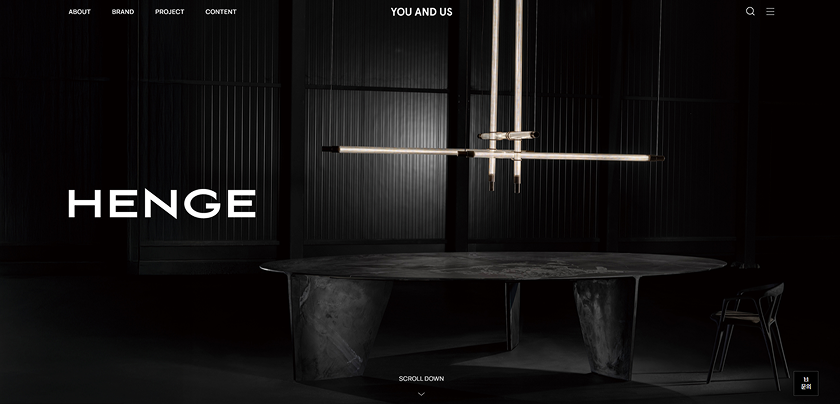
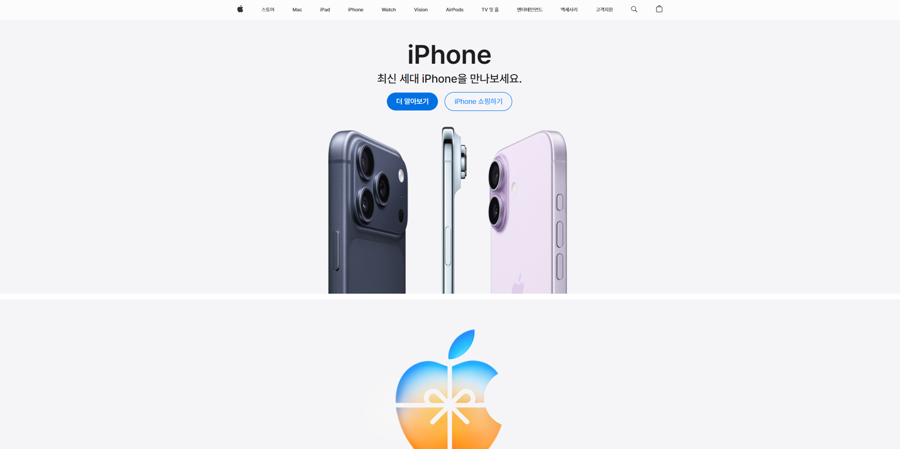
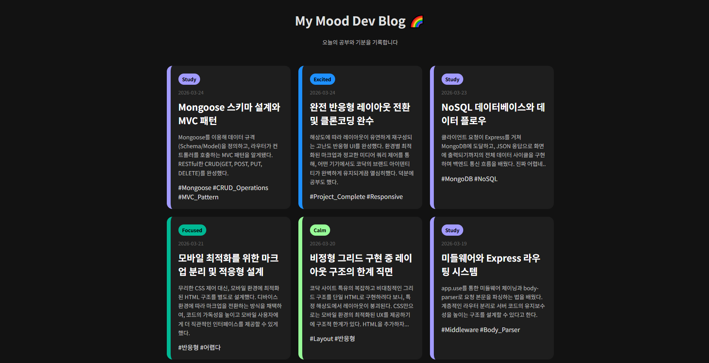

6개월 과정 2개월 차에 진행 되었던
핵심 정보 탐색이 어려운 기존 구조를 개선하기 위해
정보 구조와 시각적 위계를 재설계한 리뉴얼 프로젝트입니다.
CREATIVE FRONTEND DEVELOPER
UI/UX Designer / Frontend Developer
Let’s connect — feel free to send me an email.
zz-.-2a@daum.net
사용자 입장에서 화면을 어떻게 보여줘야
더 잘 이해할 수 있을지 고민하는 걸 좋아합니다.
디자인과 개발을 따로 생각하기보다,
둘이 어떻게 자연스럽게 이어질 수 있을지
계속 생각하면서 작업하고 있습니다.
단순히 화면을 구현하는 것보다는,
구조나 흐름을 먼저 이해하려고 하고
사용자가 헷갈리지 않고 자연스럽게 사용할 수 있는
방향을 찾는 과정에 집중합니다.
작은 인터랙션이나 디테일도
전체 경험에 영향을 준다고 생각해서,
그런 부분들도 신경 쓰려고
합니다.
프로젝트를 진행하면서 부족한 부분은 계속 개선하려고 하고,
결과뿐만 아니라 만들어가는 과정도
중요하게 생각하고 있습니다.
 Swiper.js
Swiper.js

6개월 과정 2개월 차에 진행 되었던
핵심 정보 탐색이 어려운 기존 구조를 개선하기 위해
정보 구조와 시각적 위계를 재설계한 리뉴얼 프로젝트입니다.

6개월 과정 4개월 차에 진행 되었던 프로젝트로,
사용자 입력 기반의 자동차 검색·추천·견적 흐름을 설계하고
백엔드 API 연동을 통해 실제 서비스 형태로 구현했습니다.
메인 페이지뿐만 아니라 차량 상세, 견적, 관리자페이지 등
다양한 서브페이지까지포함하여
전체 서비스 구조를 완성한 협업 프로젝트입니다.

코닥 공식 웹사이트를 기반으로 레이아웃과 UI를 구현하고,
다양한 해상도에 대응하는 반응형 구조까지 완성한
클론코딩 프로젝트입니다.
디자인 디테일과 사용자 인터랙션을 고려하여
실제서비스와 유사한 경험을 구현하는 데 집중했습니다.

유앤어스 웹사이트를 기반으로
UI와 레이아웃을 구현한 클론코딩 프로젝트입니다.
사용자 동작에 반응하는 인터랙션을 적용하고,
GSAP을 활용해 Full Page 구조로 자연스러운 화면 흐름을 구현했습니다.

애플 웹사이트를 기반으로 UI를 구현하고, hover 효과와 간단한 반응형 레이아웃을 적용한 프로젝트입니다.
View Live Site →
학습 기록과 일일 감정을 시각적으로 아카이빙하기 위해 제작한 퍼스널 로그 프로젝트입니다. 단순히 정적인 페이지 구현을 넘어, Node.js 백엔드 서버와 비동기 통신(Fetch API)을 활용해 데이터를 동적으로 관리하고, 사용자의 기분에 따라 인터페이스가 반응하는 웹 애플리케이션의 구조를 직접 설계했습니다.
View Live Site →
6개월 과정 2개월 차에 진행 되었던
핵심 정보 탐색이 어려운 기존 구조를 개선하기 위해
정보 구조와 시각적 위계를 재설계한 리뉴얼 프로젝트입니다.
6개월 과정 4개월 차에 진행 되었던 프로젝트로,
사용자 입력 기반의 자동차 검색·추천·견적 흐름을 설계하고 백엔드 API 연동을 통해 실제 서비스 형태로 구현했습니다.
메인 페이지뿐만 아니라 차량 상세, 견적, 비교 등 다양한 서브페이지까지 포함하여 전체 서비스 구조를 완성한 협업 프로젝트입니다.
코닥 공식 웹사이트를 기반으로 레이아웃과 UI를 구현하고,
다양한 해상도에 대응하는 반응형 구조까지 완성한
클론코딩 프로젝트입니다.
디자인 디테일과 사용자 인터랙션을 고려하여 실제 서비스와 유사한 경험을 구현하는 데 집중했습니다.
유앤어스 웹사이트를 기반으로
UI와 레이아웃을 구현한 클론코딩 프로젝트입니다.
사용자 동작에 반응하는 인터랙션을 적용하고, GSAP을 활용해 Full Page 구조로 자연스러운 화면 흐름을 구현했습니다.
애플 웹사이트를 기반으로 UI를 구현하고, hover 효과와 간단한 반응형 레이아웃을 적용한 프로젝트입니다.
View Live Site →
학습 기록과 일일 감정을 시각적으로 아카이빙하기 위해 제작한 퍼스널 로그 프로젝트입니다.
단순히 정적인 페이지 구현을 넘어, Node.js
백엔드 서버와 비동기 통신(Fetch API)을 활용해 데이터를 동적으로 관리하고,
사용자의 기분에 따라 인터페이스가 반응하는 웹
애플리케이션의 구조를 직접 설계했습니다.